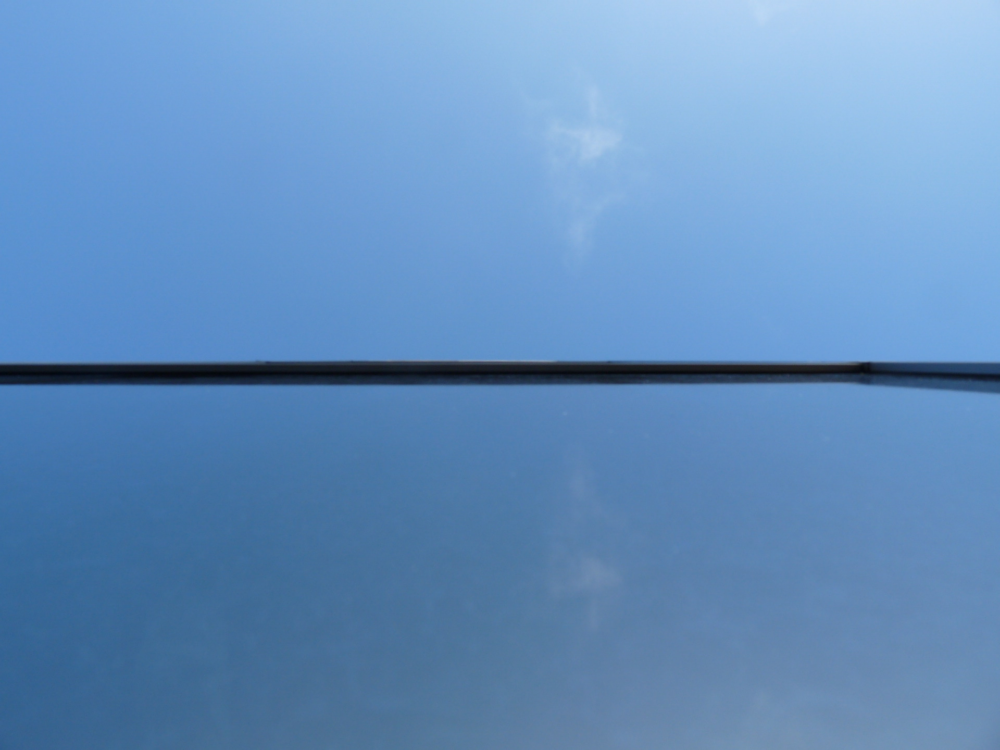
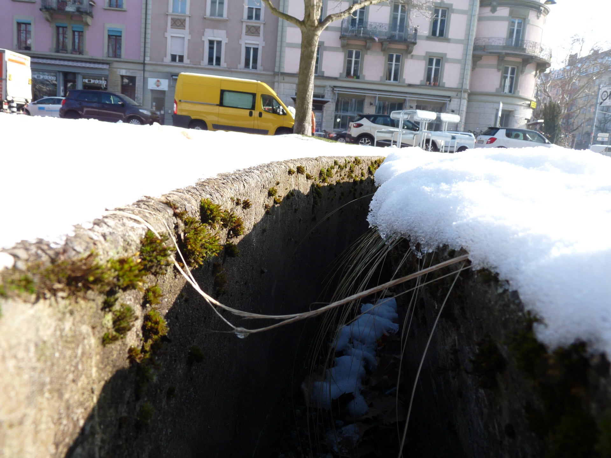
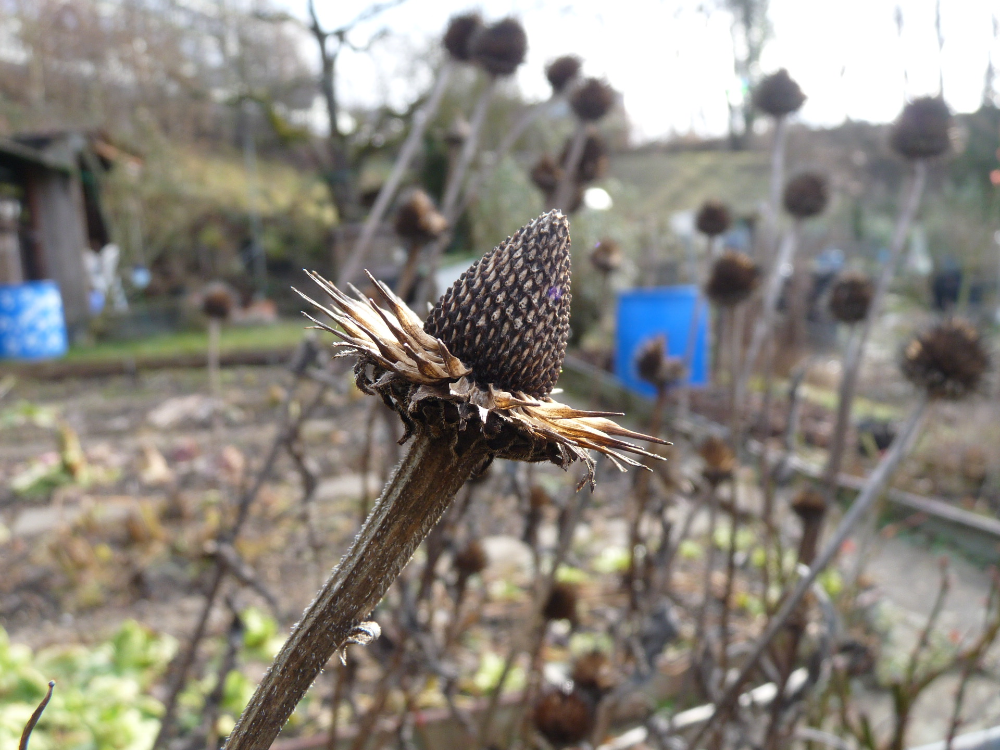
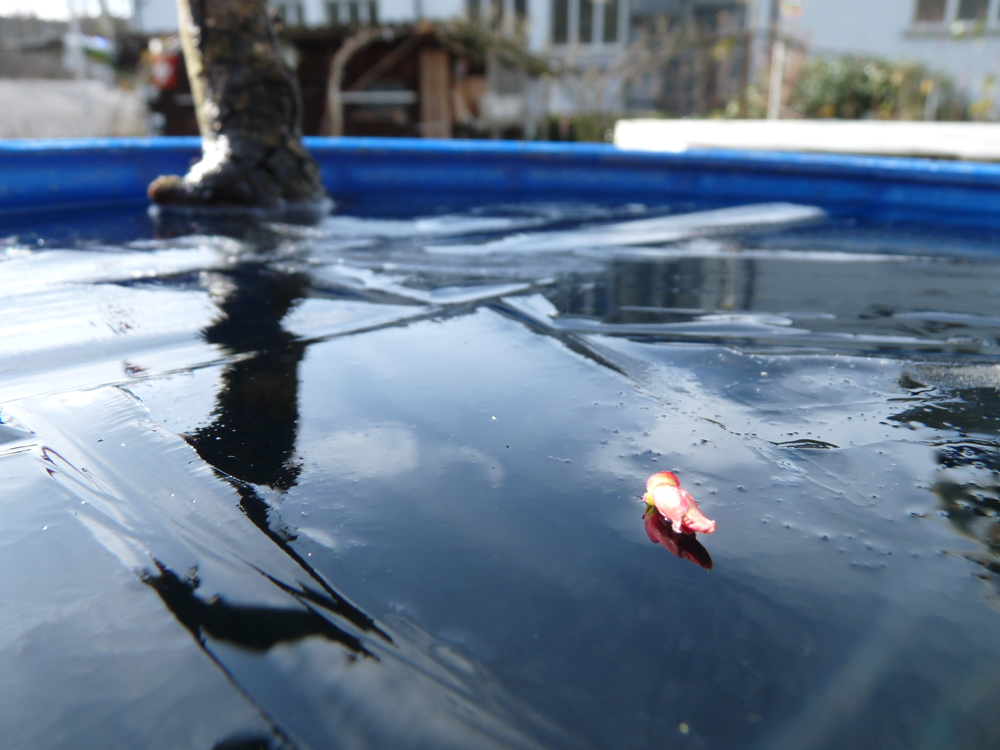
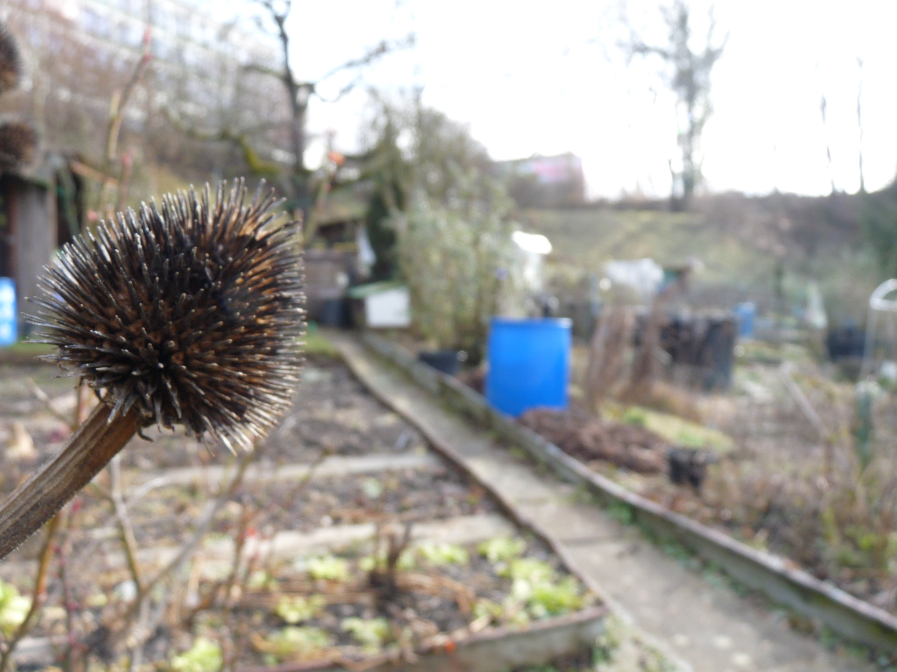

Dieses Bild soll die Äste eines Baumes wie seine Wurzeln aussehen lassen und einen Ball als Haupt-Objekt haben.
Gut gelungen: Sujet Wahl, Kreative Aussage -> Äste als Wurzeln, Keine Übermässige Farbgewichtung
Verbessern: Fokus auf Objekt, Bild ist überladen

Hier will ich eine optische Illusion erstellen, indem ich von unten an ein Fenster fotografiere. Es soll auf den Ersten Blick wie eine weit entfernte Küste aussehen, vor welcher sich eine Wolke im ruhigen Wasser spiegelt.
Gut gelungen: Fokus des Bildes auf die «Küste», nicht überladen
Verbessern: Bildschärfe, Es gibt weder Vorder- noch Hintergrund

Gut gelungen: Fokus des Bildes auf die «Küste», nicht überladen
Verbessern: Bildschärfe, Es gibt weder Vorder- noch Hintergrund
Dieser Strohhalm soll wie eine kleine Brücke aussehen.
Gut gelungen: Objektwahl
Verbessern: Hintergrund ist überladen, Der schärfste Punkt ist nicht beim Objekt, das Bild ist auf der linken Seite zu hell.

Gut gelungen: Objektwahl
Verbessern: Hintergrund ist überladen, Der schärfste Punkt ist nicht beim Objekt, das Bild ist auf der linken Seite zu hell.
Bei diesem Bild habe ich mit Perspektive und Bildschärfe herumexperimentiert. Als Objekt habe ich eine verblühte und verdorrte Pflanze genommen.
Gut gelungen: Fokus auf Objekt, klare Trennung zwischen Hinter- und Vordergrund
Verbessern: Man müsste das Bild nun noch ordentlich entwickeln

Gut gelungen: Fokus auf Objekt, klare Trennung zwischen Hinter- und Vordergrund
Verbessern: Man müsste das Bild nun noch ordentlich entwickeln
Hier liegt der Fokus auf der kleinen Blüte einer Blume, welche sich im klaren Eis spiegelt.
Gut gelungen: Fokus auf das Objekt, klare Trennung zwischen Hintergrund und Vordergrund
Verbessern: Schärfe noch weiter auf das Objekt eingrenzen

Gut gelungen: Fokus auf das Objekt, klare Trennung zwischen Hintergrund und Vordergrund
Verbessern: Schärfe noch weiter auf das Objekt eingrenzen
Bei diesem Bild versuchte ich auch wieder ein scharfes Objekt, in diesem Fall eine ausgetrocknete und stachlige Pflanze, und einen verschwommenen Hintergrund zu fotografieren.
Gut gelungen: Hintergrund verschwommener als Vordergrund
Verbessern: Vordergrund und Objekt zu unscharf, Bild hat keinen Ausgleich zum Objekt
Gut gelungen: Hintergrund verschwommener als Vordergrund
Verbessern: Vordergrund und Objekt zu unscharf, Bild hat keinen Ausgleich zum Objekt